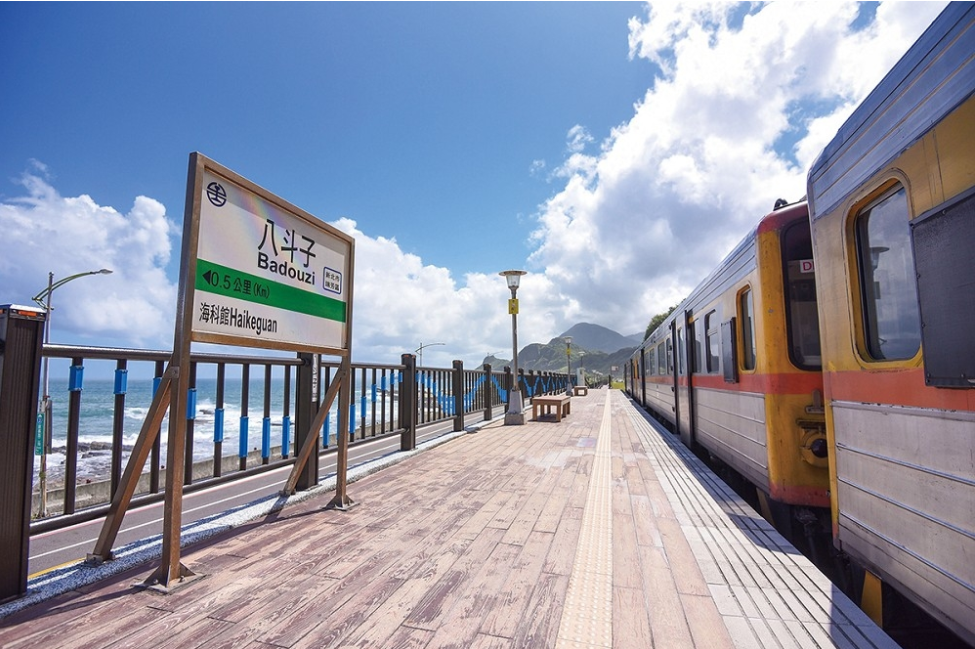
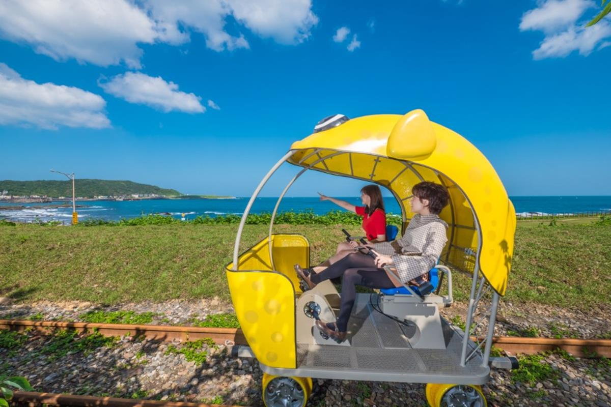
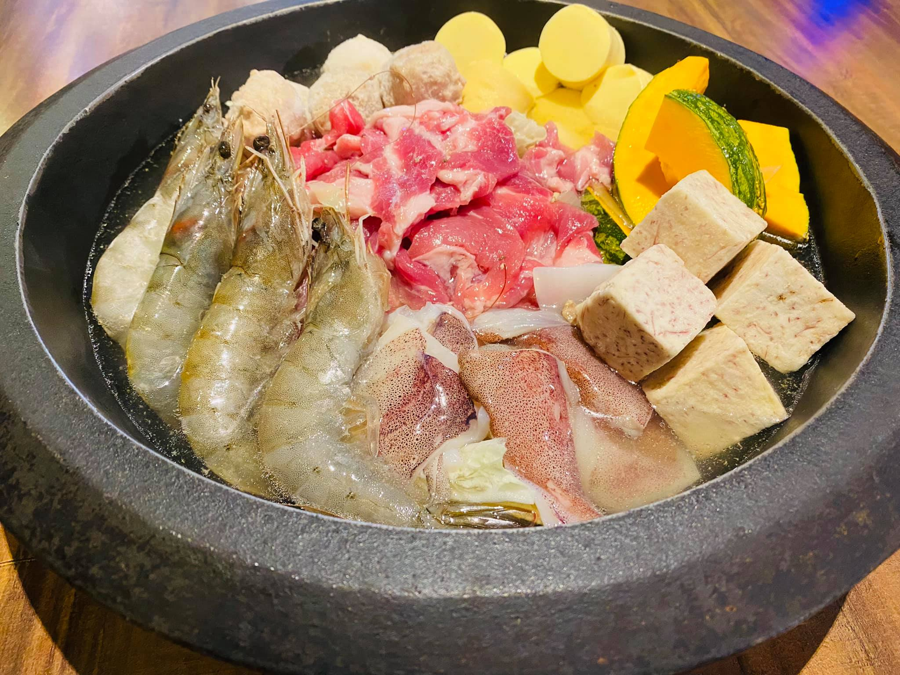
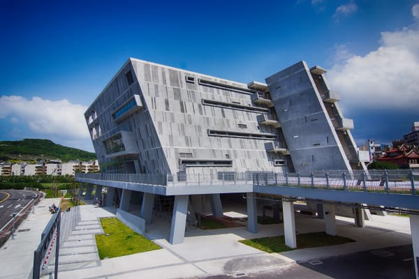
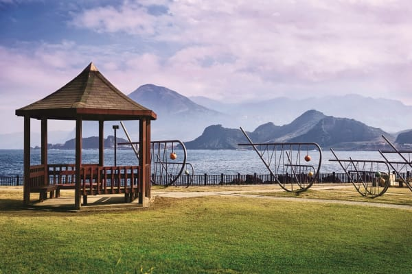
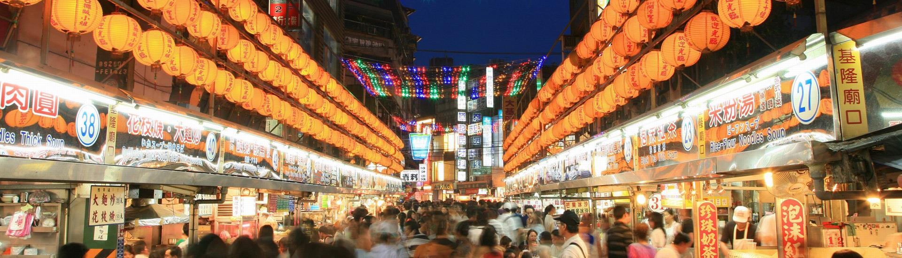

景點路線
八斗子車站
走路2分鐘
魅力基隆，這樣玩
景點路線
八斗子車站
有「北台灣多良車站」的八斗子車站是臺灣鐵路管理局所屬深澳線位在基隆市中正區砂子里的鐵路車站，全線最後1989年停止辦理客、貨運，為復駛供八斗子國立海洋科技博物館聯外交通使用做準備，2014年1月9日起正式恢復營運載客。
八斗子車站
走路2分鐘
深澳鐵道自行車
由新北市政府與交通部臺灣鐵路管理局合作打造的深澳鐵道自行車，以暢遊山海為主題，結合了沿岸無敵海景、自然生態、改造礦坑和鐵道等特色，讓遊客可以騎著外型超萌的彩色河豚造型自行車，在踩踏中一邊看海吹海風，所有旅行的願望一次滿足。
深澳鐵道自行車
走路5分鐘
望海巷石頭火鍋
八斗子車站因鄰近望幽谷、潮境公園等景點，因此周邊美食店家林立，因此周邊美食店家林立，其中的望海巷石頭火鍋頗具特色，濃郁的湯頭配上豐富的基隆海產，是您不可錯過的美食呦!
望海巷石頭火鍋
走路11分鐘
國立海洋科技博物館
位於基隆市東側的八斗子地區，西鄰八斗子、碧砂漁港，東接東北角海岸風景特定區，有台2線（濱海公路）及台鐵鐵路深澳支線經過。現有建館基地約有48公頃，潮境公園、望幽谷等知名景點皆屬館區腹地。館區主體建物分別為主題館區、海洋劇場、區域探索館。
國立海洋科技博物館
走路11分鐘
潮境公園
潮境公園園區原本為一處垃圾集放地，後來經海洋科技博物館籌備處規劃改建後，成為一處看海賞景的最佳去處，而以「潮境」為名的這個公園，因為位於漁港及漁村旁，便希望以這個名稱為地方帶來源源不絕的蘊藏與豐收。
潮境公園
搭公車15分鐘
廟口夜市
台灣各地有歷史的鄉土小吃區，大都伴隨位於市集、香火鼎盛的廟宇而產生，稱為廟口小吃。基隆奠濟宮的廟口小吃，更因有口皆碑，引來的食客多於香客，形成以美食取勝的的觀光區。
試試自訂您的行程吧!